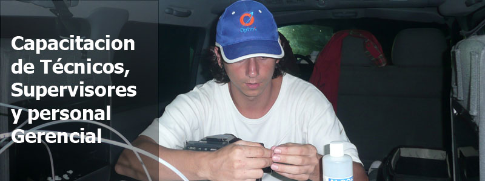

- 

En OPTIM AMERICA, nos dedicamos al tendido y mantenimiento de los cables de fibra óptica que sirven como soporte físico para las redes de sistemas digitales que hoy en día se encuentran desplegadas a lo largo de todo el mundo.
Optim América es una empresa con amplia experiencia en la realización de obras de redes de fibra óptica, su estructura civil como los tendidos que se necesitaren, tanto en tierra como en ríos y mares. Nuestro core radica en la capacidad de su personal y los conocimientos para desarrollar obras en sitios y terrenos difíciles, situaciones de geografías aisladas y que se necesiten sortear para conectar ciudades. Poseemos una capacidad y equipos para realizar mantenimientos sobre estas redes que optimizan los tiempos en servicio, lo que trae como resultado una mayor facturación para nuestros clientes.
Desarrollamos obra en todo el continente Americano y hemos logrado tiempos ejemplares en resolución de fallas gracias a la instalación de equipamientos de medición en tiempo real (RTU) y los desarrollos de georeferenciacion sobre mapas de las rutas de redes sobre las trazas de nuestros clientes. Esto nos permitió expandirnos en todo el continente y con un prestigio sobre nuestros resultados que nos permitió ampliar nuestra cartera de clientes a todos los proveedores de telecomunicaciones del territorio.
Como es sabido el rubro de las telecomunicaciones es altamente exigente y requiere conocimiento pleno de las técnicas y tecnologías usadas, como así una constante capacitación de acuerdo al avance de los sistemas utilizados como de los software y hardware existentes y en constante actualización.
Hemos realizado obras por demás importantes en lo que respecta al futuro de las telecomunicaciones de toda América Latina. Somos especialistas en obras de tendido submarino para cables de fibra óptica y realizamos además obras de redes de cables de fibra óptica sobre todo de tipo de estructuras nuevas o existentes como ser en infraestructuras de gasoductos, accesos en minas de extracción, sobre alta tensión aérea y subterráneas, plantas marinas de extracción de petróleo, perforación de pozos petrolíferos y redes para sismógrafos.